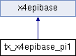

Inheritance diagram for tx_x4epibase_pi1:

Detailed Description
Empty plugin to use for very simple list- and detail views
Definition at line 31 of file class.tx_x4epibase_pi1.php.
The documentation for this class was generated from the following file:
Generated on Wed Aug 11 2010 09:43:36 for 4eyes - Base Class by
 1.7.1
1.7.1